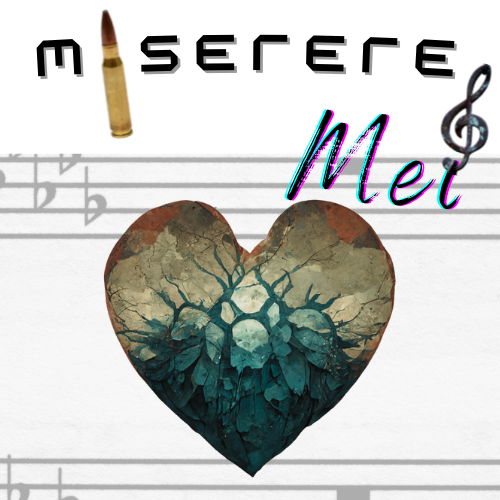

Miserere Mei - The Precarious Trails to the Library of Preachers v.1.0.0

Történetet írta és programozta: Porkoláb Ádám (https://www.hootieinbootee.com),
email
me
Grafika, design: Midjourney AI (https://www.midjourney.com/home/)
Kiindulásási HTML template: Creative Tim (https://www.creative-tim.com/product/soft-ui-dashboard)
Szövegekhez használt HTML template: Baris Senkal (https://github.com/barissenkal/Short-Story-HTML-Template)
Forbidden (403) hibához használt HTML template: Blissful Lemon
(https://codepen.io/ablissfullemon/pen/zJepap)